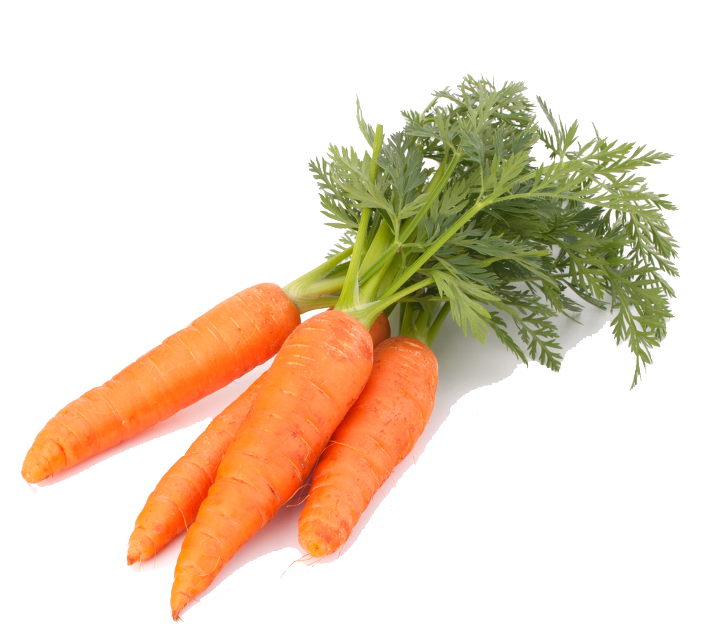
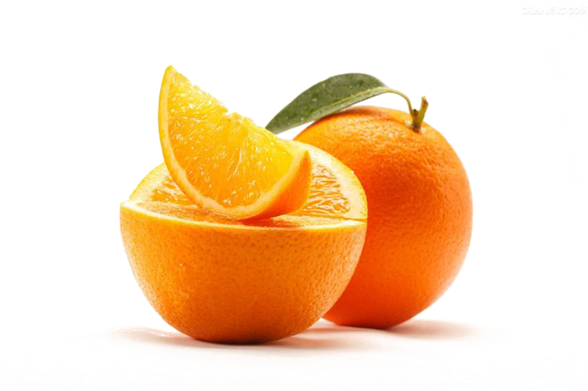
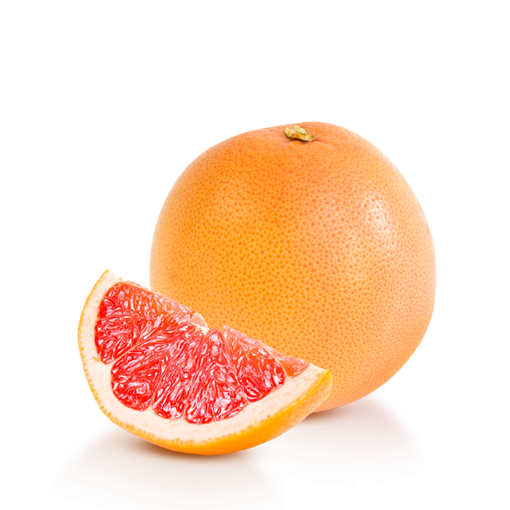

Desde 2020 las fincas Cavaliere, ubicadas en Brasil, se encargan de la siembra, cosecha, empaque y
distribución de frutas y verduras de calidad Premium.
Todas las etapas de producción de la fruta y verduras se controlan cuidadosamente, de acuerdo con las
normas de cultivo y utilizando la última tecnología.
Nuestros productos

Banana
Es muy rico en vitaminas A y B (especialmente B3), y minerales como calcio, cloro, fósforo, potasio, azufre y magnesio.
Cebolla
Rica en vitamina C y zinc. Tienen alto poder diurético.


Ajo
Además de sus destacables propiedades antioxidantes, el ajo también posee cualidades cardioprotectoras, anticancerígenas, antiinflamatorias, inmunomoduladoras, antidiabéticas, antiobesidad y propiedades antibacteriales, entre otras.
Zanahoria
Es muy rica en vitamina A


Remolacha
Compuesta en gran cantidad por ácido fólico, vitamina C y hierro.
Papaya
Posee altos contenidos de las vitaminas B1, B2 y B3 (también conocida como niacina), que regulan el sistema nervioso y también regulan el aparato digestivo. Contiene de igual manera vitaminas A y C.


Melon
Proporciona buenas cantidades de vitaminas A y C, pequeñas cantidades de vitaminas del grupo B, minerales como potasio, calcio, cloro, magnesio, fósforo, sodio y azufre.

Sandia
Posee betacarotenos, ácido fólico y vitamina B5 y C, y contiene pequeñas cantidades de otras vitaminas del grupo B. Proporciona también calcio, magnesio, fósforo, potasio y sodio.
Mango
Rico en vitaminas, sobre todo en caroteno (vitamina A) y vitamina C


Anana
Es una buena fuente de vitamina C, contiene varias vitaminas del grupo B y algunas variedades proporcionan caroteno. También proporciona calcio, magnesio, fósforo, potasio y sodio.
Naranja
Son ricas en betacaroteno y vitamina C, y poseen pequeñas cantidades de vitaminas del grupo B y E. También contienen calcio, magnesio, fósforo y potasio.


Mandarina
El mineral que más abunda en la mandarina es el potasio, necesario para la generación y transmisión de los impulsos nerviosos, la actividad muscular y el equilibrio hídrico de las células. También aporta calcio y magnesio y, en menor cantidad, hierro y cinc y fósforo.
Limon
Rico en vitamina C y también contiene vitaminas B1, B2, B3, B5, B6, B8, K y P. En cuanto a minerales es rico en calcio, cobre, hierro, magnesio, fósforo, sodio y azufre.


Pomelo
En el zumo de pomelo las propiedades diuréticas y drenantes facilitan la purificación del hígado, mientras que la vitamina C fortalece el sistema inmunológico. Con el pomelo, los beneficios más visibles aparecen en la piel y el cabello, gracias a la vitamina A, que también contribuye a la salud ocular.
Repollo
Contiene un 92% de agua, mucha fibra y pocas calorías e hidratos de carbono. Es rica en vitaminas A, C, E y B y en minerales como el azufre (lo cual aporta potentes propiedades antioxidantes), potasio, calcio. Contiene también ácido fólico y arginina, la cual nos ayuda a combatir los resfriados.